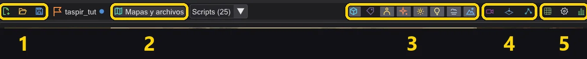
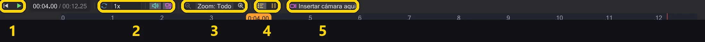
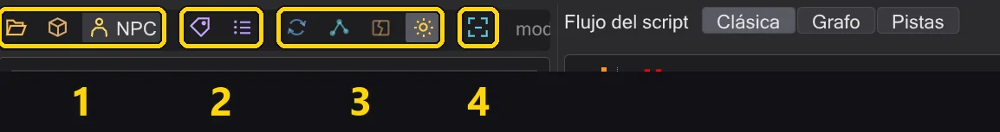

Todos los botones
Cada botón del programa (la barra de modos, la columna de acciones, la barra del mapa, las fichas de colocación, el inspector, la cámara, la línea de tiempo y la vista de modelos) con lo que hace.
Pasa el ratón por encima de cualquier botón del programa para ver la misma explicación como descripción emergente. Los botones con marco de color son interruptores: activados o desactivados.
La barra de modos#
La franja del extremo izquierdo cambia lo que muestra la ventana. El script es el mismo en todos los modos.
| Modo | Qué muestra |
|---|---|
| Eventos | La lista Eventos de todos los comandos y macros, el árbol del script, la columna de acciones: para escribir scripts. Escribir scripts |
| Misión | La misión: la lista de entidades y el inspector, el mapa en 3D con la línea de tiempo debajo: para cámaras, figuras, entidades y guardar la misión. El mapa |
| Modelo | Un modelo de personaje con sus animaciones: para encontrar una animación y ponerla en el script. Vista de modelos y personajes |
| Editor de mapas | Crea y edita mapas como en NetRadiant-Custom: vistas 2D, cámara, navegador de texturas y entidades, con sus menús y atajos. El editor de mapas |
La columna de acciones (modo Eventos)#

| Botón | Qué hace |
|---|---|
| Eliminar | Quita las líneas seleccionadas (Supr). |
| Duplicar | Inserta una copia justo debajo (Espacio). |
| Copiar / Cortar / Pegar | Portapapeles (Ctrl+C / X / V). Pegar va debajo de la selección; el texto de otros programas se acepta tras una pregunta. |
| Comentar | Convierte líneas en comentarios y al revés (Retroceso). |
| Buscar | La ventana Buscar (Ctrl+F): busca por comando o valor, reemplaza en uno o en todos los scripts. Buscar y reemplazar en todos los scripts abiertos |
| Subir / Bajar | Mueve la selección una línea, dentro de su bloque (Alt+Arriba/Abajo). |
| Deshacer / Rehacer | Deshacer y rehacer. Clic derecho en cualquiera de los dos para ver el historial completo. Deshacer cualquier cosa, incluso un paso de en medio |
| Nuevo / Abrir | Un script vacío / abrir un .txt o un .ibi compilado. |
| Recientes | Archivos abiertos recientemente (Alt+M). |
| Anexar | Añade otro script al final de este. |
| Guardar / Guardar todo / Guardar como | Guarda este script, cada pestaña cambiada, o con un nombre nuevo. |
| Exportar | Escribe el script como texto plano y lo abre. |
| Copia de seguridad / Restaurar | Guarda una copia junto al script (.bak) / vuelve a ella (Alt+B / Alt+R). |
| Mostrar tipos | Muestra los tipos de los valores en el árbol. |
| %g decimales | Muestra los números cortos: 1000 en vez de 1000.000. |
| Plegar macros | Muestra una macro como una sola línea. |
| + / - | Despliega o pliega todos los bloques. |
| ¡Compilar! | Guarda el script y escribe el .ibi que ejecuta el juego; verde cuando funciona, rojo con los mensajes cuando no. Compilar y corregir errores |
La barra del mapa (modo Misión)#

| N.º | Nombre | Qué hace |
|---|---|---|
| 1 | Misión | Nueva misión, Cargar misión, Guardar misión, y el nombre de la misión abierta. |
| 2 | Mapas y archivos | Abre un mapa, una carpeta de misión o un archivo .ent; Scripts (N) a su lado lista los scripts del mapa. |
| 3 | Lo que muestra la vista | Entidades, nombres, figuras, efectos, resplandor, luz dinámica, niebla, cielo: cada uno es un interruptor. |
| 4 | Mirar | A través de la cámara, vista superior, la ventana de waypoints de NPC. |
| 5 | Herramientas | Rejilla, ajustes de la vista, estadísticas. |
Cada botón en detalle:
| Botón | Qué hace |
|---|---|
 Nueva misión Nueva misión | Empieza una misión en cualquier mapa: se crean el inicio del jugador, el ejecutor de scripts, el script de introducción y la carpeta de la misión. 1 · Crear la misión |
 Cargar misión Cargar misión | Abre una misión de un .pk3: mapa, entidades, cada script en pestañas, las figuras. Misiones |
 Guardar misión Guardar misión | Guarda cada script, escribe el .ent, compila y empaqueta el .pk3, tras comprobar la misión. 8 · Guardar y jugar |
 Sin misión Sin misión | El nombre de la misión abierta; un punto indica cambios sin guardar. Pasa el ratón por encima para ver su carpeta. |
 Mapas y archivos Mapas y archivos | Abre un mapa del disco o de un .pk3, una carpeta de misión o un archivo .ent aparte. |
| Scripts | Los scripts a los que apuntan las entidades del mapa: elige uno para abrirlo. |
 Entidades Entidades | Muestra los marcadores de entidades: destinos, marcas, ejecutores, spawners. |
 Nombres Nombres | Escribe en la vista los nombres de las entidades y las figuras. |
 Figuras Figuras | Muestra las figuras del script, movidas por la línea de tiempo. |
 Efectos Efectos | Muestra los efectos del mapa (fx_runner). |
 Resplandor Resplandor | El resplandor de los shaders marcados con glow, como r_DynamicGlow. |
 Luz dinámica Luz dinámica | Los sables láser y las luces de efectos iluminan paredes y figuras. |
 Niebla Niebla | La niebla del mapa, como la dibuja el juego. |
 Cielo Cielo | El cielo; desactivado puedes mirar el mapa desde fuera. |
 A través de la cámara A través de la cámara | Muestra lo que ve la cámara: el comando de cámara seleccionado, o la cámara en el cabezal. Mirar a través de la cámara mientras trabajas |
 Vista superior Vista superior | Mira hacia abajo en vertical; una altura de corte oculta los techos. Mirar el mapa desde arriba |
 Waypoints de NPC Waypoints de NPC | La ventana de waypoints de NPC: mostrar, crear y comprobar la red. Waypoints de NPC |
 Rejilla Rejilla | Ajusta las entidades a 8 a 64 unidades al arrastrar y colocar. |
 Ajustes de la vista Ajustes de la vista | Brillo, luz ambiental, detalle, sombras, resaltar las entidades del script activo, y la pantalla del juego: relación de aspecto, cg_fovAspectAdjust y el marco en la vista libre (Vista previa y mirar a través). Ver mejor en mapas oscuros |
 Estadísticas Estadísticas | Fotogramas por segundo, texturas, triángulos y valores de la tarjeta gráfica. |
Las fichas de colocación#
La franja del borde izquierdo del mapa. Pulsa una ficha y luego pulsa en el suelo, o arrastra la ficha a la vista. Mayús coloca varias, Esc para. Colocar, mover y girar entidades
| Botón | Qué hace |
|---|---|
| Personaje (NPC_spawner) | Un personaje que aparece: fija NPC_type y un nombre. |
 Destino de caminar (waypoint_navgoal) Destino de caminar (waypoint_navgoal) | Un sitio al que camina una figura (SET_NAVGOAL). |
 Marca de cámara / mirada (ref_tag) Marca de cámara / mirada (ref_tag) | Una marca con dirección, para cámaras (tag) y objetivos de mirada. |
 Objetivo de mirada (target_position) Objetivo de mirada (target_position) | Un punto al que mirar o apuntar. |
 Ejecutor de scripts (target_scriptrunner) Ejecutor de scripts (target_scriptrunner) | Ejecuta un script cuando se usa: por un trigger, el inicio del jugador u otro script. |
| Efecto (fx_runner) | Reproduce un archivo de efecto (.efx). |
 Sonido (target_speaker) Sonido (target_speaker) | Reproduce un sonido, una vez o en bucle. |
| Waypoint de NPC (waypoint) | Un punto de la red de navegación de los NPC. |
| Inicio del jugador (info_player_start) | Donde aparece el jugador. |
El inspector de entidades#

| Botón | Qué hace |
|---|---|
 Volar hasta allí Volar hasta allí | Hace volar la vista hasta la entidad. |
 Al suelo Al suelo | La pone sobre el suelo de debajo, como DROPTOFLOOR en el juego. |
 Duplicar Duplicar | Una copia, de cada entidad seleccionada. Alt+arrastrar en la vista hace lo mismo. |
 Eliminar Eliminar | La quita. |
 Animar Animar | Abre la ventana de animación para puertas, plataformas, naves y efectos. Animar móviles y archivos ROFF |
 Deshacer Deshacer | Deshace el último cambio de entidad (las entidades tienen su propio historial). |
 Rehacer Rehacer | Lo rehace. |
 Todas las claves (en bruto) Todas las claves (en bruto) | Muestra cada clave como texto plano. |
| + Clave | Añade una clave. |
| Abrir | Junto a una clave de script: abre el script, y lo crea en la carpeta de la misión si aún no existe. |
La barra de la cámara#
Aparece en la vista cuando la cámara está seleccionada. Cámara

| Botón | Qué hace |
|---|---|
 Mover Mover | Flechas: mueven el plano a lo largo de un eje; el cuadro del centro, en el plano de la vista. |
 Rotar Rotar | Anillos: giran el plano. |
| Mundo | Mundo o Local: las flechas siguen los ejes del mapa o a la cámara. |
 Plano anterior Plano anterior | El plano anterior. |
 Plano siguiente Plano siguiente | El plano siguiente. |
| Ajustar a la vista | Pone el plano donde estás mirando. |
 Pilotar Pilotar | Siéntate en el plano y vuélalo; Intro pone una clave. Volar tú mismo un plano de cámara |
| A través de la cámara | Mirar a través de la cámara. |
 Vista previa de cámara Vista previa de cámara | Una pequeña imagen de lo que ve la cámara, en la esquina. |
 Nuevo plano de cámara aquí Nuevo plano de cámara aquí | Un plano nuevo en tu vista, tras el seleccionado. |
| Eliminar plano | Quita el plano. |
La línea de tiempo#

| N.º | Nombre | Qué hace |
|---|---|---|
| 1 | Reproducir | Volver al inicio, reproducir / detener; el indicador de tiempo de al lado cambia entre segundos y fotogramas. |
| 2 | Reproducción | Bucle, sonido, seguir a la cámara, y la lista de velocidad. |
| 3 | Zoom | Muestra más o menos tiempo. |
| 4 | Filas | Una fila por figura, filas inactivas, esperas como bloques. |
| 5 | Insertar cámara aquí | Inserta un plano de cámara en el cabezal. |
Cada botón en detalle:
| Botón | Qué hace |
|---|---|
 Al inicio Al inicio | Vuelve al inicio del script. |
 Reproducir Reproducir | Reproduce la escena (cámara, figuras, sonido) en tiempo de juego. |
 Bucle Bucle | Al llegar al final, vuelve a empezar. |
| Sonido | Reproduce los sonidos mientras avanza la línea de tiempo, oídos desde la cámara que muestra la vista, como en el juego. Sonido como en el juego |
 Seguir Seguir | Mueve la vista junto con la cámara. |
 Alejar Alejar | Muestra más tiempo. |
 Acercar Acercar | Muestra menos tiempo, con más detalle. |
 Filas de personajes Filas de personajes | Una fila por figura: cuándo camina, habla y actúa cada una. |
 Pistas inactivas Pistas inactivas | Muestra también las filas en las que no pasa nada. |
 Esperas Esperas | Muestra las esperas como bloques propios. |
| Insertar cámara aquí | Inserta un plano de cámara en el cabezal. |
El indicador de tiempo cambia entre segundos y fotogramas al pulsarlo; la lista junto al botón de reproducir fija la velocidad. Arrastra bloques para moverlos en el tiempo: Línea de tiempo.
La barra del modelo (modo Modelo)#

| N.º | Nombre | Qué hace |
|---|---|---|
| 1 | Abrir | Un .glm del disco, un modelo de los .pk3, o un personaje del juego (NPC). |
| 2 | Skin y esqueleto | Otro .skin, otro .gla. |
| 3 | Mirar | Plato giratorio, huesos, tapas, texturas. |
| 4 | Encuadrar | El modelo entero a la vista, de frente. |
Cada botón en detalle:
| Botón | Qué hace |
|---|---|
| Abrir .glm | Abre un modelo .glm del disco. |
 Desde .pk3 Desde .pk3 | Abre un modelo de los archivos .pk3 del juego. |
| NPC | Cada personaje del juego: pulsa uno para cargarlo como lo muestra el juego. |
| Abrir .skin | Carga un .skin para el modelo. |
| Cargar .gla | Carga otro esqueleto / archivo de animaciones (.gla). |
| Plato giratorio | Hace girar el modelo lentamente sobre sí mismo. |
| Huesos | Muestra el esqueleto. |
 Mostrar tapas Mostrar tapas | Muestra las tapas de las superficies donde se unen las extremidades. |
| Texturas | Texturas activadas o desactivadas. |
 Encuadrar Encuadrar | El modelo entero a la vista, de frente. |
| Copiar | En la lista de animaciones: copia el nombre de la animación. |
| Al script | Pone set ( SET_ANIM_BOTH, ... ) para la animación en el script. Hacer que una figura reproduzca una animación |